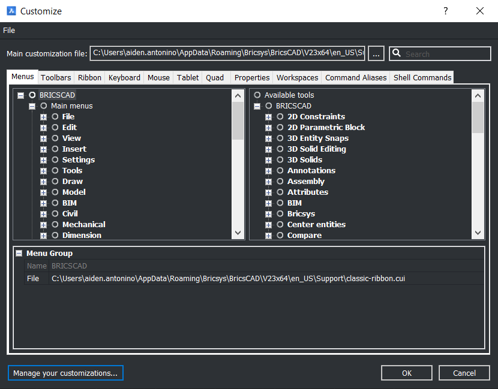
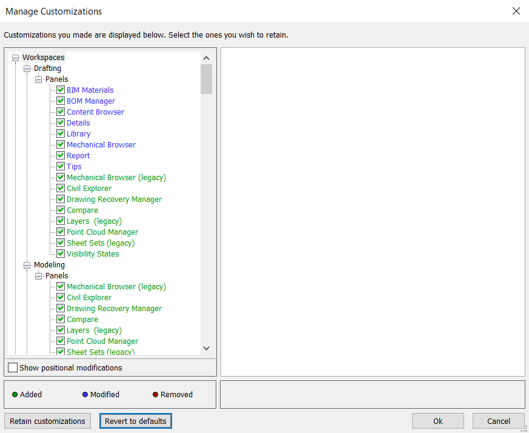

Troubleshooting
Most problems are a ribbon that didn't load or a component that wasn't installed. Work through these in order.
A ribbon tab is missing
First, restart BricsCAD — the ribbons load at startup and a tab can be missed if BricsCAD was busy. If it's still missing, reset the customisation:
- Run
CUSTOMIZE. - Open the Manage Your Customizations panel.
- Revert to defaults, then restart BricsCAD.


A command says "unknown command"
That component probably isn't installed. Commands are grouped by plugin, and each is optional at install time:
| If this fails | You need |
|---|---|
OPENCHECKLIST | The Drawing Checklist component |
NSWLOTS | The NSW Lot Loader component |
PCDIG | The Point Cloud Digitizer component |
OUTLINE / VPO | The Community LISP tools component |
| Engineering or WAE commands | The matching ribbon component |
Re-run the installer and tick the missing component.
Lines look wrong — fences and easements draw solid
The linetype file didn't resolve. You'll see a message on the command line saying so. Re-run the installer to restore the Support files.
Plot commands don't produce a PDF
The plot device isn't installed. The engineering and WAE plot commands need the BW plot configurations, which ship with those components — re-run the installer.
Text is the wrong size
Text height is the drawing's TEXTSIZE divided by the current annotation scale.
If text comes out too large or small, check the annotation scale is set correctly before
placing it.
Still stuck
Contact the CAD team lead with the drawing, the command you ran and the exact message from the command line.